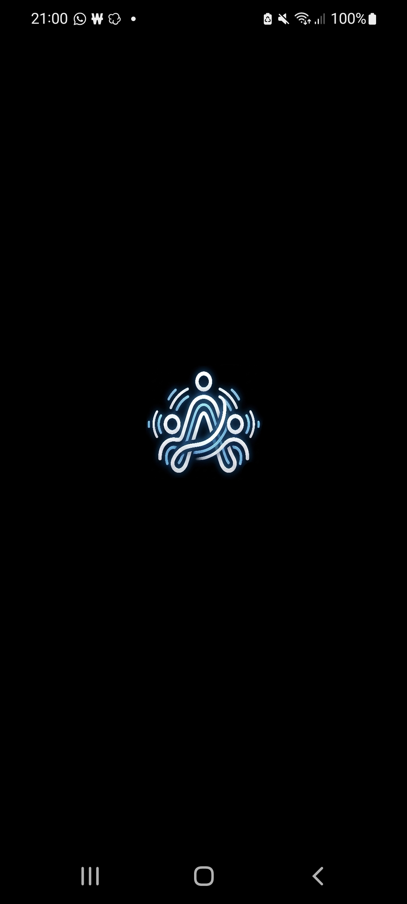
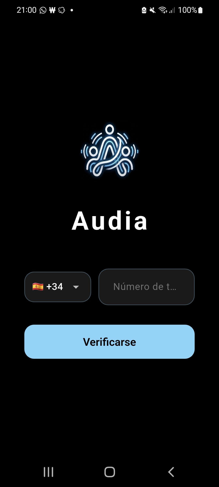
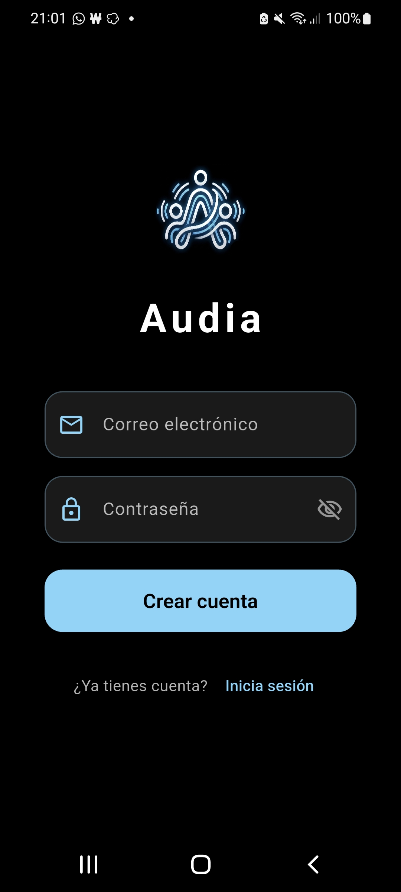
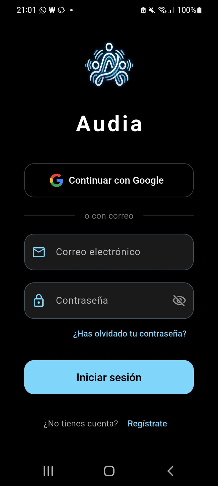
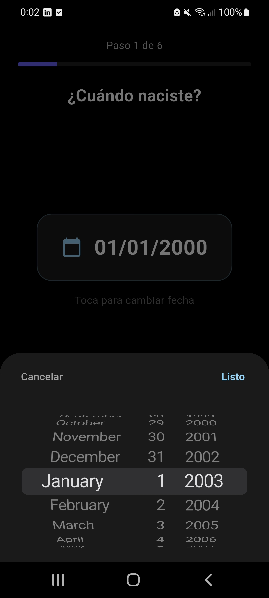
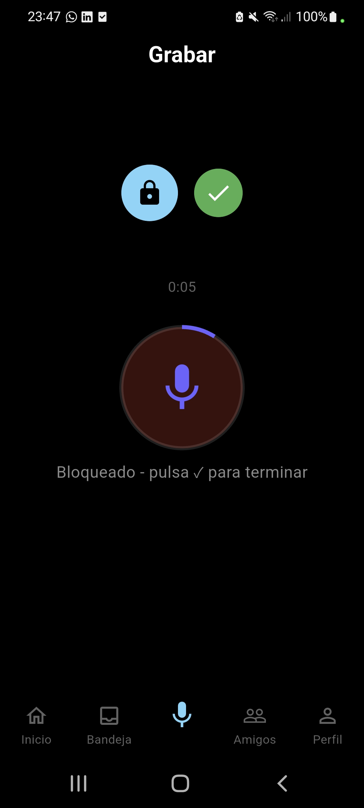
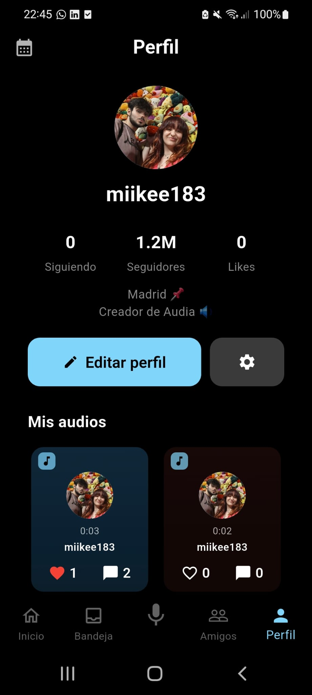
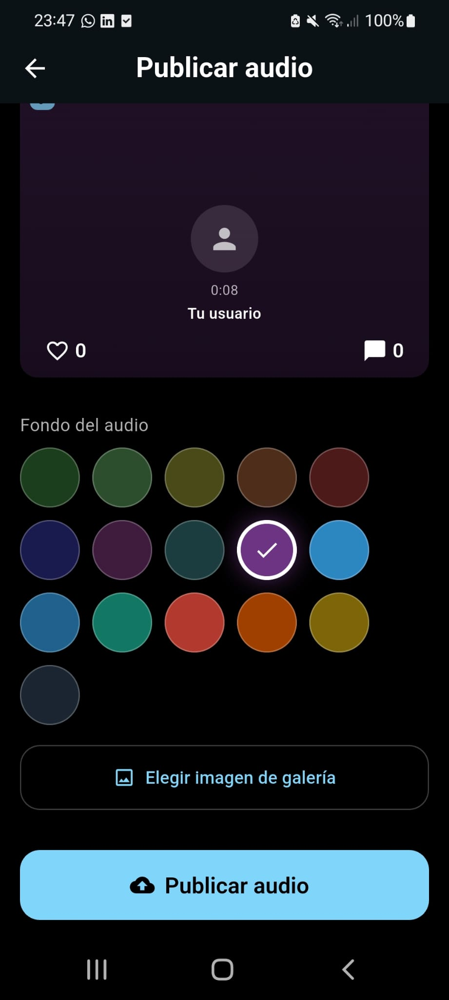
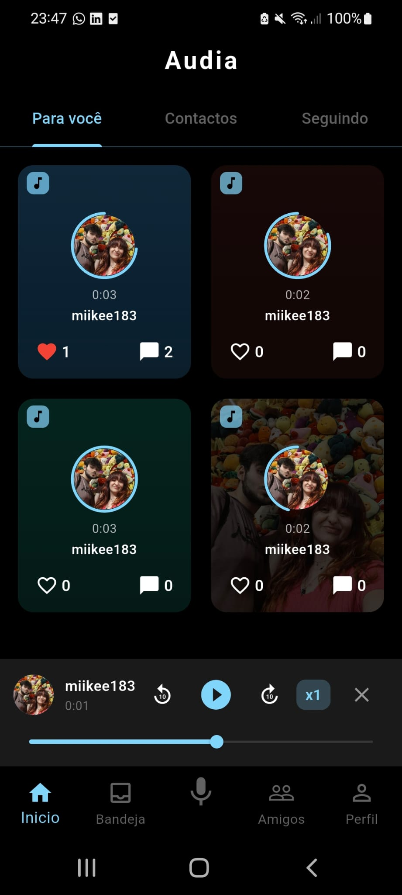

¿Qué es Audia?
Audia es una plataforma social de audio que te permite grabar y compartir clips de voz cortos (hasta 60 segundos) con tus amigos y seguidores. Es como una red social basada en voz: graba, publica, da like y comenta en publicaciones de audio.
Grabación y Feed
Mantén presionado para grabar con deslizamiento para bloquear, controles de reproducción y ajuste de velocidad. Explora audios de todos, tus contactos o solo las personas que sigues desde el feed.



Interacción Social
Sigue y deja de seguir usuarios, da like y comenta en publicaciones de audio. Haz tu perfil privado para que solo amigos mutuos escuchen tus audios, o bloquea cuentas no deseadas.



Personalización y Notificaciones
App traducida a 11 idiomas. Alterna entre modo oscuro y claro con persistencia entre sesiones. Recibe notificaciones de likes, comentarios y nuevos seguidores, y personaliza tu perfil con foto, nombre y biografía.



Actualmente en pleno desarrollo. El frontend está construido con Flutter / Dart, el backend con Python / FastAPI, base de datos PostgreSQL (SQLAlchemy ORM), autenticación con Google Sign-In (Firebase Auth), almacenamiento multimedia en Cloudinary y despliegue en Render (backend) y próximamente Google Play (frontend).